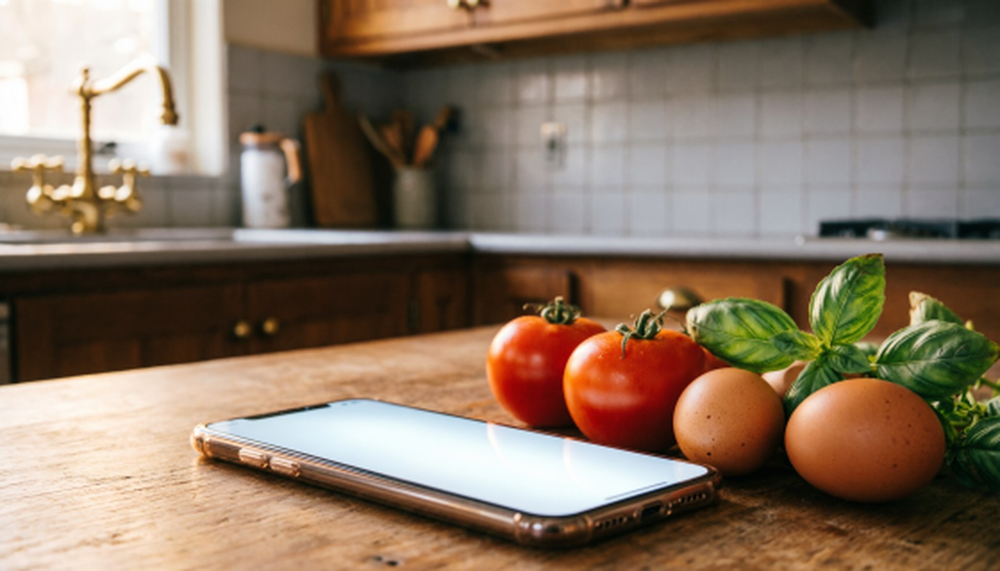
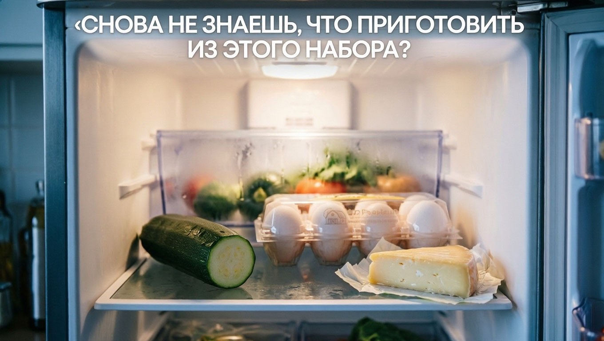
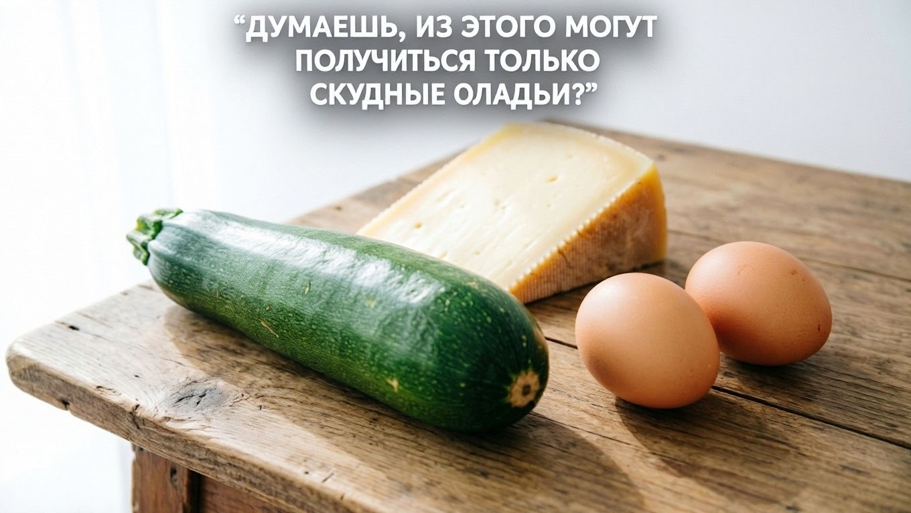
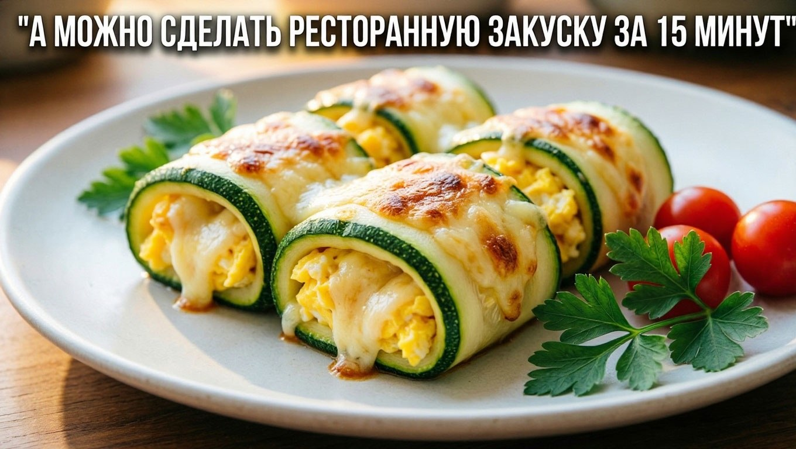
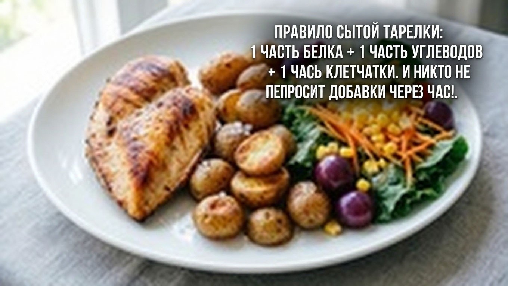

Интерактивный чек-лист и шпаргалка, как накормить семью из того, что осталось в холодильнике. Без стресса и походов в магазин.

Ты приходишь домой после работы. Впереди — проверка уроков, купание и укладывание. Сил стоять у плиты два часа нет. Открываешь холодильник: там половина кабачка, вчерашний рис и яйца. Мозг зависает. Проще всего заказать пиццу… но это опять удар по бюджету.
Давай договоримся: ты не обязана быть шеф-поваром каждый день. Тебе нужен просто рабочий инструмент, который снимет с тебя эту головную боль.

Сохраняй, чтобы не паниковать, когда времени в обрез:

Те самые кабачок, яйца и сыр со Страницы 3 превращаются в полноценный ужин из обычных продуктов.
Никакой сложной готовки. Просто нарежь, сверни, посыпь сыром и в духовку. Пока ты проверяешь уроки у старшего, ужин для всей семьи уже на столе.
Чтобы повторить было просто — вернись к чек-листу на Странице 3.

Чтобы через час никто не просил «кусочек хлеба», собирай тарелку по правилу 3-х элементов:
Лайфхак для мам: если дети не едят овощи, «прячь» их в соусы или запекай вместе с основным блюдом под сыром.
Я знаю, что после рабочего дня ты не хочешь читать лонгриды. Поэтому я создал ВК-Бота Шеф-повара. Он работает как твоя старшая сестра, которая всегда знает, что приготовить.